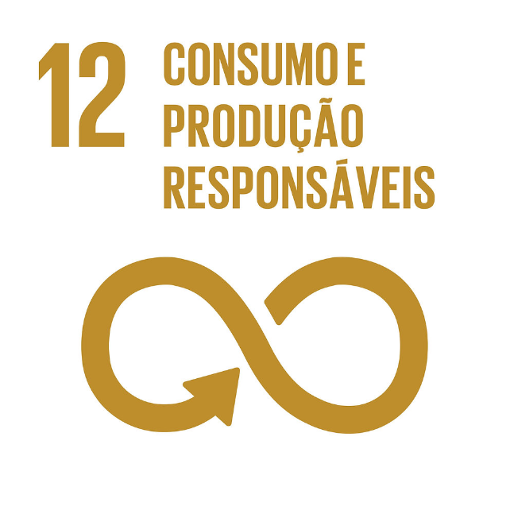
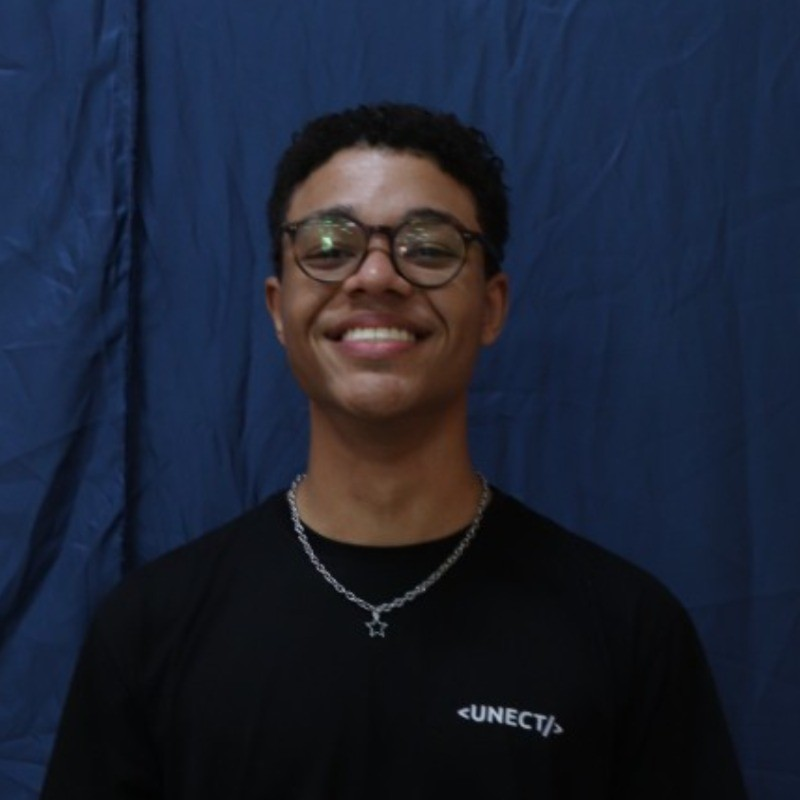

Resumo
Estudante de Engenharia da Computação, interessado em desenvolvimento web front-end e sustentabilidade.
ODS que pretendo contribuir


Estudante de Engenharia da Computação, interessado em desenvolvimento web front-end e sustentabilidade.
